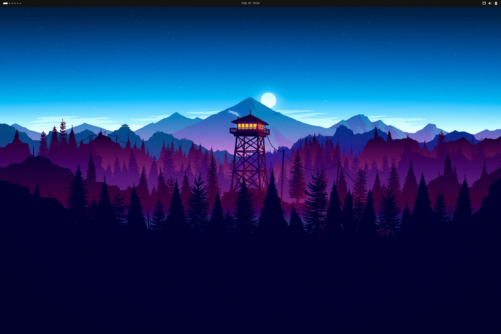
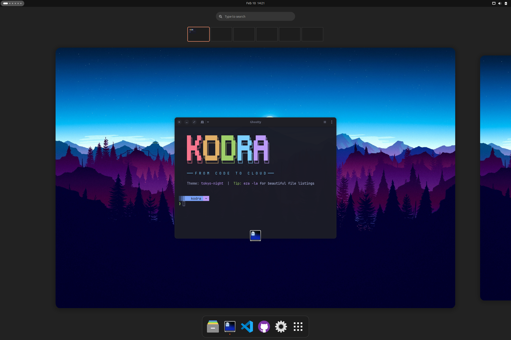
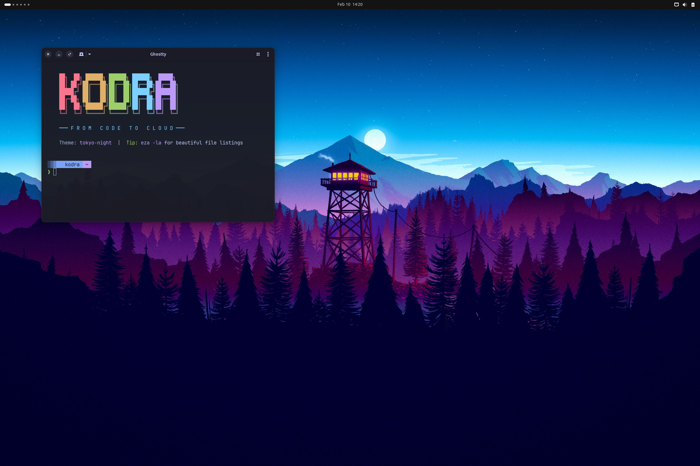

██╗ ██╗ ██████╗ ██████╗ ██████╗ █████╗
██║ ██╔╝██╔═══██╗██╔══██╗██╔══██╗██╔══██╗
█████╔╝ ██║ ██║██║ ██║██████╔╝███████║
██╔═██╗ ██║ ██║██║ ██║██╔══██╗██╔══██║
██║ ██╗╚██████╔╝██████╔╝██║ ██║██║ ██║
╚═╝ ╚═╝ ╚═════╝ ╚═════╝ ╚═╝ ╚═╝╚═╝ ╚═╝
Agentic Azure
Engineering
Powered by GitHub CLI and agentic AI. Cloud-native tools, AI assistance, and a beautiful desktop—all configured with one command. From fresh Ubuntu to azd up in minutes.
Powered by GitHub CLI and agentic AI. Cloud-native tools, AI assistance, and a polished WSL2 Ubuntu workflow—all configured with one command inside Windows Terminal.
✓ Docker CE configured
✓ VS Code + Tokyo Night theme
✓ GitHub Copilot ready
✓ Desktop themed
Done in 4m 32s — Run kodra doctor to verify
✓ Docker CE auto-start enabled
✓ Azure CLI + azd installed
✓ Oh My Posh + Nerd Font ready
✓ GitHub Copilot CLI configured
Done in 3m 58s — Run kodra doctor --fix if anything needs repair
Beautiful developer environment



Tokyo Night theme • Nerd Fonts • 40+ cloud-native tools pre-configured
WSL2-native developer environment
Windows Terminal • Docker CE native • Oh My Posh • zero Docker Desktop license required
Why Ubuntu?
We chose Ubuntu as our foundation because it offers the best balance of stability, community support, and developer experience. With millions of users and extensive documentation, you'll never be stuck on a problem for long.
All CLI tools, Azure integrations, and GitHub Copilot running in Windows Terminal. Preview the WSL2 edition →
Built for WSL2
Designed for Windows developers who want a clean Ubuntu workflow without Docker Desktop licensing or manual shell surgery.
⚙️ WSL Systemd
Bootstraps and validates systemd so services behave like real Ubuntu instead of a fragile shell shim.
🐳 Docker CE Auto-Start
Uses native Docker CE inside WSL2 and configures auto-start, avoiding Docker Desktop licensing complexity.
🔤 Windows Terminal Fonts
Sets up Nerd Font-friendly prompts that render correctly in Windows Terminal and VS Code terminals.
✨ Oh My Posh
Provides a polished shell prompt optimized for WSL2 sessions, cloud tooling, and git-heavy workflows.
💙 PowerShell 7
Installs PowerShell 7 alongside Ubuntu tooling so cross-platform scripting feels natural on the same machine.
🪟 Windows Integration
Plays nicely with code ., explorer.exe ., and Windows-native workflows from your Linux shell.
Everything you need to ship
From Bicep templates to Kubernetes deployments—with AI suggesting your next move.
Azure-Native
Azure CLI, azd, Bicep, Terraform, and PowerShell 7—all configured and ready to deploy.
GitHub CLI Native
The gh CLI is central to your workflow—PRs, issues, repos, and CI/CD from the terminal.
Agentic AI
GitHub Copilot CLI powers agentic workflows. Type ?? to ask AI anything from your terminal.
Container-Ready
Docker CE, lazydocker TUI, and Dev Containers for reproducible environments.
Kubernetes
kubectl, Helm, and k9s for managing AKS clusters with style.
Modern Terminal
Ghostty terminal with Starship prompt and Nerd Fonts. Fast and beautiful.
50+ Shortcuts
Shell aliases for Git, Docker, Azure, and Terraform plus desktop shortcuts for faster flow.
Themed Desktop
ULauncher, window tiling, system monitor, blur effects, wallpapers, and a clean dock.
Enterprise CI/CD
GitHub Actions, Azure DevOps, and release workflows sit naturally beside your local toolchain.
Security Scanning
Container, IaC, and dependency scanning tools help you catch issues before they ship.
A WSL2-native cloud workstation
Lean, Windows-friendly, and optimized for Azure, containers, and fast terminal-driven development.
Cloud & Azure
Azure CLI, azd, Bicep, Terraform, and OpenTofu ready inside your WSL2 Ubuntu environment.
Containers
Docker CE runs natively in WSL2—no Docker Desktop dependency, no extra license overhead.
AI-Powered
GitHub Copilot CLI and GitHub CLI make agentic workflows feel at home in Windows Terminal.
Terminal
Oh My Posh, Nerd Fonts, and modern CLI tools give WSL2 a polished, productive shell experience.
Dev Tools
VS Code integration, fonts, git tooling, and shell helpers are configured for daily use.
Security
Built to avoid Docker Desktop license requirements while still delivering secure container workflows.
The complete toolkit
Cloud-native and desktop tools that are configured to work together.
WSL2-ready tools
A focused cloud toolkit for Windows developers who prefer Linux shells.
One command interface
Manage your desktop, themes, and cloud setup with simple commands.
kodra themeSwitch between themeskodra wallpaperBrowse and set wallpaperskodra desktopConfigure dock, tiling, loginkodra dockSet dock favorite appskodra setupRe-run first-time setupkodra doctorCheck system healthkodra doctor --fixAuto-fix common issueskodra updateUpdate all toolskodra fetchShow system infoWSL2 commands that keep things healthy
Focus on verification, repair, and quick access to the tools you need every day.
kodra doctorCheck systemd, Docker, fonts, and shell statekodra doctor --fixFix the most common WSL setup issueskodra updateRefresh packages and cloud toolskodra repairRepair shell configuration and serviceskodra repair --allRun the full repair workflowkodra setupRe-run guided first-time setupkodra fetchPrint environment and system infokodra versionShow installed WSL edition versionkodra helpList all supported commands50+ built-in shortcuts
Shell aliases and keybindings to supercharge your workflow.
??Ask GitHub Copilot for shell commandslgLaunch lazygit TUIlzdLaunch lazydocker TUIgs, ga, gc, gpGit status, add, commit, pushazd-upDeploy to Azure with azdtf, tfi, tfp, tfaTerraform shortcutsSuper + SpaceApp launcher (Ulauncher)Super + TWindow tiling gridWSL2 shortcut packs
Detailed alias bundles for the commands you reach for most when building from Windows.
�� Git
Stage, review, and commit without leaving the terminal.
gs git status
ga git add
gc git commit
gp git push
lg lazygit🐳 Docker
Inspect containers and jump into the TUI quickly.
dps docker ps
dcu docker compose up -d
dlogs docker logs -f
lzd lazydocker☸️ Kubernetes
Cluster visibility without typing the long forms every time.
k kubectl
kgp kubectl get pods
kgs kubectl get svc
kctx kubectx☁️ Azure
Fast access to auth, subscriptions, and azd deployment flows.
azl az login
azs az account set
azd-up azd up
azd-down azd down📍 Navigation
Move across projects and common folders faster.
.. cd ..
... cd ../..
z zoxide jump
zi interactive zoxide🪟 WSL Interop
Bridge Windows apps and Linux workflows in one place.
code .
explorer.exe .
pwsh
clip.exe < file.txtSix beautiful themes
Cohesive color schemes across terminal, editor, and desktop.
🌃 Tokyo Night
Purple-blue Tokyo city lights
💙 Ghostty Blue
Deep navy with electric cyan
Catppuccin
Soft pastels with cozy contrast
🌄 Gruvbox
Warm retro tones for long coding sessions
❄️ Nord
Cool blues with crisp contrast
🌹 Rose Pine
Muted mauves with elegant warmth
How It Works
Three steps from fresh Ubuntu to productive Azure development.
Run One Command
Copy the install command and paste it into your terminal. Kodra handles everything automatically.
wget -qO- https://kodra.codetocloud.io/boot.sh | bashPick Your Theme
Choose from 6 beautiful themes. The installer applies colors across terminal, VS Code, and desktop.
Start Building
Open a new terminal and you're ready. Azure CLI, Docker, kubectl, GitHub CLI—all configured.
How It Works
Three steps from PowerShell to a productive WSL2 Ubuntu cloud workstation.
Open PowerShell → Run Command
Start from Windows, launch your WSL distro, and run the one-line installer.
wget -qO- https://kodra.wsl.codetocloud.io/boot.sh | bashTools Install Automatically
Kodra configures Docker CE, Oh My Posh, Azure tooling, and Windows-friendly shell integration.
Verify → Start Building
Run kodra doctor, confirm services are healthy, then start shipping from the same shell.
Frequently Asked
What Ubuntu versions are supported?+
Kodra is designed for Ubuntu 24.04 LTS and newer. It also works on Ubuntu in WSL2 for Windows users. Ubuntu 22.04 may work but is not officially supported.
Is an Azure subscription required?+
No. Kodra installs the Azure tools, but you can use them with any subscription or skip Azure-heavy workflows entirely. Docker, Kubernetes, and terminal features work standalone.
Will it break my existing setup?+
Kodra backs up your existing dotfiles before making changes. You can restore them anytime with kodra restore.
Can I customize what gets installed?+
Yes. The installer includes optional components and a minimal mode so you can tailor the environment for your workflow.
How do I uninstall Kodra?+
Run kodra uninstall for interactive removal and the option to restore original dotfiles.
Is it free and open source?+
Yes. Kodra is completely free under the MIT license, and the code is available on GitHub.
Will it break my WSL setup?+
Kodra WSL is designed to layer onto an existing Ubuntu distro safely. It focuses on shell, service, and tooling configuration rather than replacing your distro.
Can I customize it?+
Yes. You can re-run setup, tweak prompt configuration, and selectively enable or repair pieces of the environment over time.
Does it require Docker Desktop?+
No. The WSL2 edition is built around native Docker CE inside your Linux environment, so Docker Desktop is optional rather than required.
What Windows versions are supported?+
Use a Windows version with modern WSL2 support and an Ubuntu distro that can run systemd. Current Windows 11 setups are the smoothest path.
How is this different from full Kodra?+
The Ubuntu Desktop edition themes the full graphical workstation. The WSL2 edition focuses on native Linux tooling, services, and Windows Terminal integration.
Is it free?+
Yes. The WSL2 edition is also MIT licensed and free to use.